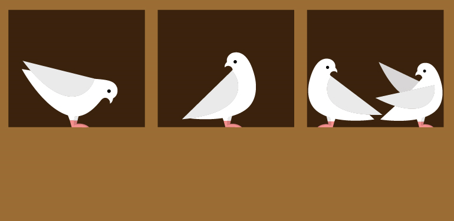
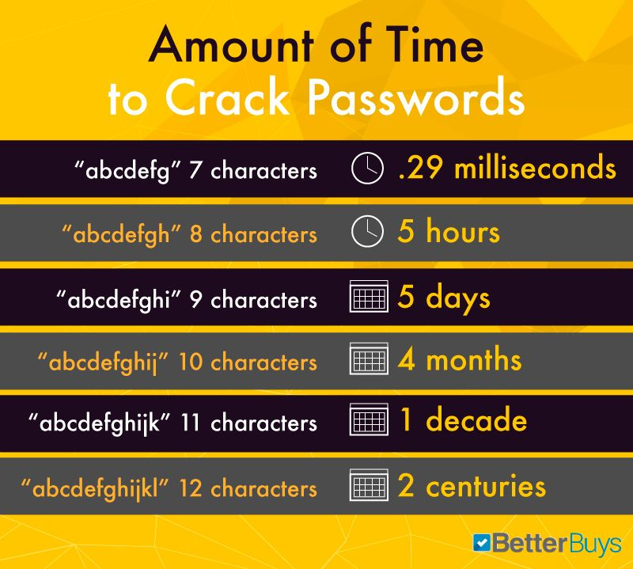
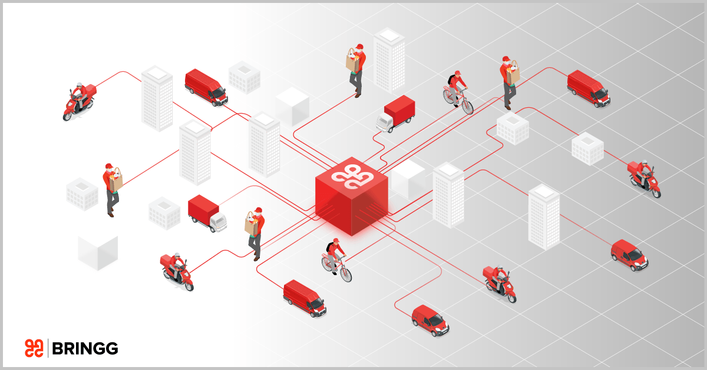
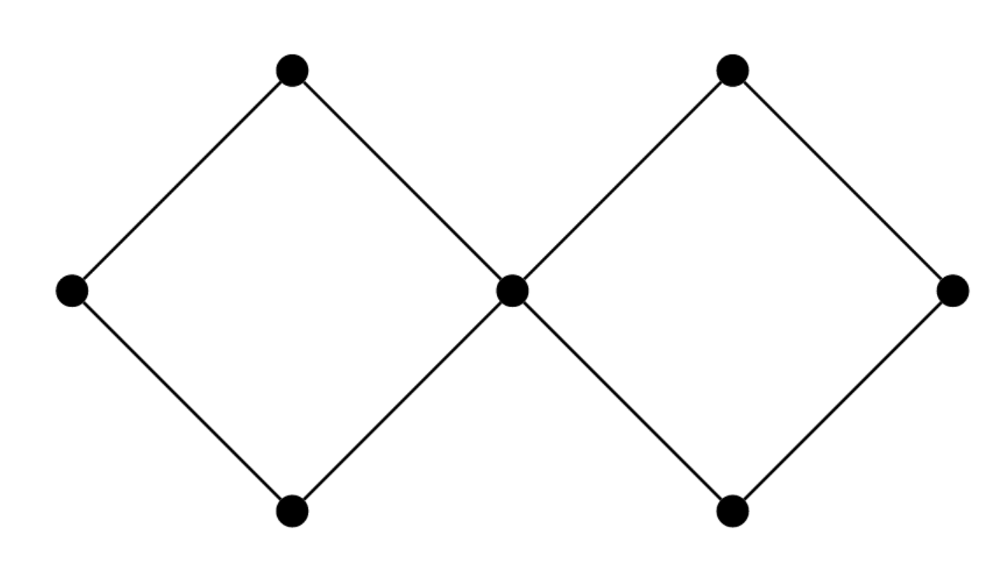
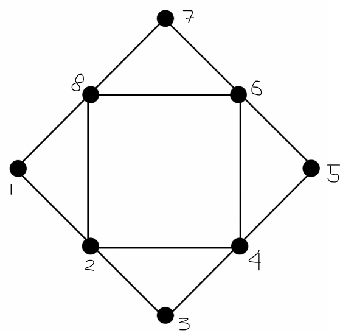
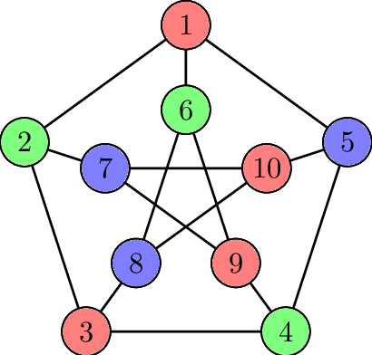

How many? This question lies at the core of counting and combinatorics, which are fundamental concepts in mathematics. Counting is not just about determining the number of possibilities, but it also involves understanding the principles and techniques used to solve complex problems that involve arranging elements or selecting subsets.
Example 1.1: iPhone Password
Dave's iPhone.
How many ways can a password be formed on Dave's iPhone?
In the case of Dave's iPhone password, we intuitively know that there are four slots to fill with numbers ranging from 0 to 9. Each slot can be filled independently, so we multiply the number of choices for each slot:
10 * 10 * 10 * 10
There are 10,000 ways to input a password on the iPhone.
This example demonstrates a straightforward application of counting, where the possibilities can be enumerated by considering the choices available for each element in a sequence. However, combinatorial problems can become much more intricate and require deeper analysis and techniques. In which we can use permutations and combinations that will be discussed as we move forward.
Now suppose in a bit string of length 8 how many bit patterns are there?
Example 1.2: Bit String
def count_bit_patterns(length):
num_patterns = 2 ** length
return num_patterns
# Example usage:
length = 8
result = count_bit_patterns(length)
print(f"The number of bit patterns for a string of length {length} is: {result}")
--------------------------------------------------------------------------------------------------------------
Result:
The number of bit patterns for a string of length 8 is: 256
Analysis
In the code above it illustrates, how we could solve basic counting problems. Given that a bit contains 1 or 2. We know there are only two choices for each character space in an 8 character string. With that, we know it is 2^8.
_ _ _ _ _ _ _ _
With each character holding an amount of 2. Illustratively, it is 2*2*2*2*2*2*2*2 resulting to 256. This the very crux of dealing with counting, we try to segregate and think logically on each outcome, and try to find how many ways it can affect the whole. Without breaking the problem down into its length, and possible values at each character, solving a problem like this would be difficult.
Reflection
By grasping the concepts of basic counting and how we arrive at these values. We gain the thought process to think logically on the outcomes, how it varies, and how systematically we think. This skill becomes valuable when faced with real-life situations that involve large amounts of data and its procural.
In Discrete Mathematics, this lesson is the foundation to understand much more complex topics. Once I grasped how neccessary this was, it became easier for me to understand the further topics.
Accounting, inventory management, and organizing large amounts of data all need efficient ways to sort and organize data. Through this, it even can help in the business side of things.
Overall, the study of counting has not only broadened my mathematical knowledge but has also equipped me with transferable skills that can be applied across disciplines, making me a more effective problem solver and critical thinker.
The Pigeonhole Principle is a fundamental concept in combinatorics that gives certainty into choices: "If you distribute more objects into containers than there are containers, then at least one container must contain more than one object."
Example 2.1: Pigeons in Pigeonholes

Pigeonholes
The idea behind the principle is based on the obvious observation that some pigeonholes must hold more than one pigeon if there are more pigeons than pigeonholes. In the example we can identify four pigeons, and three pigeonholes, and also see that there is one pigeonhole that holds more than one pigeon. This technique can be used in a variety of problem-solving situations in combinatorial mathematics.
In combinatorial problems, the Pigeonhole Principle is frequently used to demonstrate the existence of solutions or to set boundaries on specific parameters. It offers an effective tool for counting arguments and aids in finding trends, recurrences, or limitations in a particular topic.
Example 2.1: Soccer Tournament
Tournament
Find the number of wins a tournament of 8 teams must have to decide a champion, given the champion has to win 7 games.
Now in order for the champion to be declared, a team must have 7 wins. So, 7 wins for the whole tournament, is a possible answer, yet it isn't a guarantee. That is to say for values based on chance. However, to get rid of that chance, we try to think based on the worst-case scenario. Which is all 8 teams have 6 wins.
If 8 teams have 6 wins which equals 56 wins then on the 57th win there must be a winner.
def pigeonhole_principle(items, holes):
n = items
pigeonholes = holes
if pigeonholes < n:
return True # At least one pigeonhole has more than one item
else:
return False # Each pigeonhole contains at most one item
# Example usage
items = 8
holes = 7
result = pigeonhole_principle(items, holes)
print(result)
--------------------------------------------------------------------------------------------------------------
Result:
True
Analysis
Understanding the Pigeonhole Principle is crucial in combinatorics, probability theory, and other areas of mathematics. By applying this principle, you are taught to think in the worst - case scenario, and find the definite outcome. In the worst-case scenario, you consider the most unfavorable or challenging conditions that could occur. This allows you to explore the limits and boundaries of a problem, providing insights into what is guaranteed or unavoidable. By examining the worst-case scenario, you can identify patterns, constraints, and limitations that help determine the possible outcomes and make informed decisions.
Reflection
The Pigeonhole Principle has taught me the importance of considering not just the best-case scenario, but also the worst-case scenario. In our lives, we naturally tend to expect and focus on positive outcomes. However, the Pigeonhole Principle reminds us of the need to have a mindset prepared to face challenging situations and bad days as well. By embracing this principle, we develop a balanced perspective that encompasses both the good and the bad.
This principle extends beyond mathematics and finds relevance in various domains, including software development. One notable concept in software development is the Big-O Notation. It symbolizes the time complexity of an algorithm and provides developers with insights into how to optimize their code. By analyzing the worst-case scenario, developers can understand the performance implications of their code and strive to improve efficiency, even when faced with challenging inputs.
Quiz
What is the Pigeonhole Principle's thought process?
Permutations and combinations are fundamental concepts in combinatorics. They involve the arrangement and selection of objects , respectively.
P(n, r) = n! / (n - r)!
Permutations refer to the arrangement of objects in a specific order, considering all possible arrangements. The number of permutations can be calculated using formulas like factorial or permutation formulas based on specific conditions.
C(n, r) = n! / (r! * (n - r)!)
Combinations, on the other hand, are the selections of objects without considering their order. The number of combinations can be determined using combinations formulas, which often involve combinations with or without repetition.
Example 3.1: Find the Probability
Dice and Cards
In a standard deck of playing cards, how many different ways can you arrange a set of 5 cards in a specific order?
Now notice the word order this means we are talking about permutations. Therefore we use the permutation formula.
Given: n=52 cards, r=6 cards
P(52, 5) = 52! / (52 - 5)!
= 52! / 47!
= 52 * 51 * 50 * 49 * 48= 311,875,200
There are 311,875,200 different ways to arrange a set of 5 cards in a specific order from a standard deck.
Because of this, we now know the number of ways for 5 cards in a specific order. However, what if order didn't matter how would this affect the outcome?
In a standard deck of playing cards, how many different ways can you arrange a set of 5 cards in any order?
Now since order doesn't matter this means we are talking about combinations. Therefore we use the combination formula.
There are 2,598,960 different ways to arrange a set of 5 cards in a specific order from a standard deck.
Now, this problem shows a lesser amount of ways, primarily because there are less distinct patterns to be aware of. Permutations and Combinations go hand in hand, identifying where order is needed is crucial to know which concept to apply.
Now, let's take a break from the solving and understand the importance of permutations and combinations.
Example 3.2: Password Cracker

Passcode Cracker
By leveraging permutations, password brute force crackers systematically explore the vast space of possible password combinations. They generate permutations in a methodical manner, covering all possible variations within the defined character set and password length. Evidently, a longer password is harder to crack as well and vice versa.
Analysis
Numerous real-world fields, including probability, statistics, genetics, encryption, and project planning, use combinations and permutations. They give us the ability to compute probabilities, examine intricate systems, improve results, and come at wise judgments. Understanding combinations and permutations is crucial for solving problems, anticipating outcomes, and exploring the possibilities in a particular situation, whether it be in science, business, or everyday situations.
Reflection
Now that we have a good understanding of the Basics of Counting this is where we supplement our learning with Permutations and Combinations to solve more complex problems. Usually these are problems with constraints, such as having a certain amount of people to take from a group. Alternatively, it could be finding the number of ways to arrange 10 people with no female and male adjacent to each other.
In Computer Science, specifically, Cryptographic keys, are a fundamental component of secure communication and data protection. The generation of strong and unique keys is essential to ensure the confidentiality and integrity of sensitive information. Permutations and combinations play a crucial role in this process. Without a good understanding of this, many networks would be susceptible and vulnerable to cyber attacks.
On the other hand, a good understanding of these concepts can also benefit the other side of the network, the grey-hat hacker. Furthermore, when an attacker systematically tries different combinations of keys to decrypt an encrypted message. The understanding of permutations and combinations helps estimate the time and computational resources required to crack a cryptographic key by enumerating all possible combinations.
Quiz
How many different committees can be formed from a group of 8 people, if the committee must consist of 3 members?
In computer science, finite probability plays an important role in the
study of the complexity of algorithms. The concept of finite probability allows us to analyze the likelihood of certain outcomes or events within the context of algorithmic operations.
When evaluating algorithmic complexity, we often consider the probability of encountering specific inputs or scenarios. This helps us understand the expected behavior, performance, and efficiency of algorithms in real-world situations.
Example 4.1: Dave's Phone Throwback
Dave's Iphone
Dave has just upgraded his iOS, and now the password requirements are for 6 digits. What is the probability of Dave guessing the password on his 7th try?
Using the basics of counting, we know all combinations total to 10^6, our sample size. With guessing on his 7th try we now have two variables.
p(E) = |E| / |S|
E=7, S=10^6
0.0007%
Alternatively, the probability he doesn't get it on the 7th try is its complement or 1 - P(E) = P'(E)
P'(E)=0.993%
The idea behind the finite probability is to divide the event by the sample space. Although this was a simple concept, the essence of finite probability is to find the number of outcomes E divided by the total number of outcomes S.
The code below shows the gist of finite probability.
def calculate_finite_probability(events, sample_space):
probability = events / sample_space
return probability
# Example usage
events = 3
sample_space = 10
result = calculate_finite_probability(events, sample_space)
print(f"The finite probability is: {result}")
--------------------------------------------------------------------------------------------------------------
Result:
The finite probability is 0.3.
Analysis
Asides finding probabilities to passwords or card decks, finite probability is used to assess the average-case complexity. By assigning probabilities to different input distributions, we can estimate the expected running time or resource consumption of the algorithm over a large number of inputs. This information aids in understanding the algorithm's behavior and its performance characteristics in practical scenarios.
Moreover, in the design and analysis of data structures, finite probability comes into play when considering the likelihood of various operations or events occurring. This includes scenarios such as collision probabilities in hash tables, cache hit rates, or the expected number of comparisons in sorting algorithms. By incorporating finite probabilities into these analyses, we gain insights into the efficiency and effectiveness of different data structures and algorithms under specific conditions.
Reflection
Finite probability isn't only used to calculate problems given in school, but also it is very evident in everyday life. Even waking up in the morning and going about our daily routines involves probabilities. For example, there is a probability of catching the bus on time, a probability of encountering traffic on the way to work, or a probability of finding a seat on a crowded train.
Understanding finite probability helps us make informed decisions and assess risks in various situations. It allows us to analyze the likelihood of different outcomes and make predictions based on available information. Whether it's planning a trip, making investment decisions, or assessing the chances of success in a project, considering finite probability allows us to weigh the potential outcomes and choose the most favorable course of action.
Moreover, finite probability is crucial in fields such as insurance, finance, and risk management. Insurance companies calculate the probability of certain events occurring, such as accidents or property damage, to determine premiums and coverage. Financial institutions use probability models to assess investment risks and make decisions based on expected returns. Risk management strategies in businesses are also based on evaluating probabilities to minimize potential losses.
Quiz
What are the two main elements in finite probability?
Similar to the previous topic of finite probability, probability theory delves deeper into the relationship between events and provides a framework for analyzing and making predictions based on that relationship. Probability theory allows us to quantify uncertainty and understand the likelihood of different outcomes occurring.
Probability theory goes beyond simple calculations of probabilities and explores concepts such as independence, conditional probability, and random variables. These concepts enable us to model and analyze complex systems, make informed decisions under uncertainty, and assess the impact of various factors on the outcomes of interest.
Example 5.1: Software Bug
Bug
A software company releases regular updates for its application. Historically, the probability of an update containing a bug is 0.15. The company plans to release 10 updates this year. What is the probability that at least one update will contain a bug?
To solve this problem, we can use the complement rule of probability. The complement of the event "at least one update containing a bug" is "no updates containing a bug."
The probability of no updates containing a bug is given by the complement of the probability of an update containing a bug. Therefore, the probability of no updates containing a bug is 1 - 0.15 = 0.85.
To find the probability of at least one update containing a bug, we subtract the probability of no updates containing a bug:
P(at least one update containing a bug) = 1 - P(no updates containing a bug)
1-0.196=0.803 -- Approximately, 80.3%
The idea behind the probability theory is to think systematically and exclude outcomes based on context. In example 5.1, in the Set S, we excluded the probability of having 0 bugs, which was p(0), in order to find at least one bug.
Analysis
Probability theory is a more in depth understanding when we try to manipulate outcomes to the desired context. Such as finding at least an n number of objects from a group. Probability theory depicts the ways to find these outcomes.
Moreover, it emphasizes on Independent Events. These are events where the occurrence or outcome of one event does not affect the occurrence or outcome of another event. This concept is crucial in understanding the probability of multiple events happening together.
For example, let's consider rolling two fair dice. The outcome of rolling the first die does not affect the outcome of rolling the second die. The probability of getting a specific outcome on the first die, say rolling a 3, is independent of the probability of getting a specific outcome on the second die, say rolling a 5. Probability theory allows us to calculate the probability of both events occurring together by multiplying their individual probabilities.
Reflection
Probability theory is based on conditions and not solely on the sample size of data. It takes into account the underlying assumptions and constraints that govern the events being analyzed. Probability theory enables us to make precise predictions and draw meaningful conclusions by considering the specific conditions and context in which the events occur.
By incorporating probability theory into computer science, we can address real-world challenges more effectively. From analyzing network traffic patterns and predicting system failures to optimizing resource allocation and designing secure protocols, probability theory provides a solid foundation for making informed decisions in the face of uncertainty..
Quiz
In a bag, there are 5 red balls, 3 green balls, and 2 blue balls. If you randomly select a ball from the bag without looking, what is the probability of drawing a red ball?
A key idea in probability theory and statistics that connects conditional probabilities is the Bayes' theorem. It enables us to revise our opinions or gauge the possibility of an event in light of fresh data or knowledge. The theorem bears the name of Thomas Bayes, a Presbyterian pastor and mathematician who lived in the 18th century.
The key concept of Bayes' theorem revolves around the conditional probability of an event A given that event B has occurred. It is mathematically represented as:
P(A|B) = (P(B|A) * P(A)) / P(B)
WHERE:
P(A|B): This represents the probability of event A occurring given that event B has already happened.
P(B|A): This is the probability of event B occurring given that event A has already happened. It is known as the likelihood.
P(A): This denotes the prior probability of event A occurring, which is our initial belief or knowledge about the probability of A before considering any evidence.
P(B): This represents the probability of event B occurring, which serves as the normalization factor.
Example 6.1: Spam Mail!
Spam Mails
Suppose you are a software developer working on a new antivirus program. The program is designed to detect and classify emails as either "spam" or "not spam" based on certain features. You have collected the following information about the program's performance:
The program correctly classifies 95% of spam emails as spam (true positive rate).
The program incorrectly classifies 3% of non-spam emails as spam (false positive rate).
30% of the emails received are spam, while the remaining 70% are non-spam.
Now, given that an email has been classified as spam by the program, what is the probability that it is actually spam?
To solve this problem, we can apply Bayes' theorem. Let's define the events as follows:
A: Email is spam.
B: Email is classified as spam by the program.
We are interested in finding P(A|B), the probability that an email is spam given that it has been classified as spam.
P(B|A) = 0.95 (the program correctly classifies 95% of spam emails as spam)
P(A) = 0.30 (30% of the emails received are spam)
P(B) = P(B|A) * P(A) + P(B|not A) * P(not A)
= 0.95 * 0.30 + 0.03 * 0.70 (considering both true positive and false positive rates)
Therefore, the probability that an email is actually spam, given that it has been classified as spam by the program, is approximately 0.9048, or 90.48%.
Analysis
Bayes' theorem is a fundamental concept in probability theory and is often considered a powerful extension of it. While probability theory focuses on calculating the likelihood of events based on known probabilities, Bayes' theorem allows us to update those probabilities based on new evidence or information.
On the other hand, Bayes' theorem introduces the concept of conditional probability, which takes into account prior knowledge or beliefs about the events before new evidence is observed. It allows us to update our beliefs and make more informed predictions by incorporating new information.
Bayes' theorem is particularly useful in situations where we have prior knowledge or assumptions and need to revise our beliefs based on observed data. It is widely used in various fields, including statistics, machine learning, data analysis, and decision-making. By integrating prior knowledge with new evidence, Bayes' theorem provides a powerful tool for reasoning under uncertainty and making probabilistic inferences.
Reflection
One key reflection on Bayes' theorem is its relevance in real-life applications, especially in fields like healthcare, finance, and machine learning. In healthcare, Bayes' theorem is used in diagnostic tests, where the probability of having a disease is updated based on the test results and the known prevalence of the disease. In finance, it is employed in risk assessment and portfolio management, where the probability of certain events occurring is updated based on market conditions and historical data. In machine learning, Bayes' theorem is at the core of Bayesian inference, allowing us to make predictions and update our beliefs about model parameters as we gather more data.
Moreover, Bayes' theorem promotes a more nuanced understanding of probabilities by considering conditional probabilities. It enables us to evaluate the likelihood of an event given certain conditions, which is often more relevant and realistic in real-life situations. By incorporating conditional probabilities, we can make more precise predictions and assessments.
In conclusion, Bayes' theorem has significant real-life applications and offers a valuable framework for reasoning under uncertainty. It allows us to update our beliefs, incorporate prior knowledge, and make informed decisions based on new evidence. By embracing Bayes' theorem, we can navigate uncertain situations more effectively and make probabilistic inferences that are relevant to real-life scenarios.
Quiz
Bayes' theorem is particularly useful in situations where?
Connectivity determines the ability of nodes or devices to establish communication or travel paths in a network or transportation system. It helps ensure efficient and reliable connectivity between various components. For example, in a computer network, connectivity analysis can determine if all computers can communicate with each other. In transportation, it can identify the best routes for delivering goods or providing services based on the connectivity of roads or transportation links.
Example 7.1: Courier Services

Delivery Network
Imagine a scenario where Amazon has multiple distribution centers and a network of delivery vehicles. The goal is to efficiently connect these distribution centers with each other and with customer locations.
Connectivity analysis helps determine the most efficient paths for Amazon's delivery vehicles to reach various destinations. By examining the connectivity of roads, traffic conditions, and other transportation factors, Amazon can plan routes that minimize distance, travel time, and fuel consumption. This analysis ensures that packages can be delivered to customers in the shortest possible time, enhancing customer satisfaction.
Yet, how do we determine connectivity?
Example 7.2: Two Diamonds

Graph
Above we can see a center vertex connecting two of the diamonds showing connectivity. Yet once we remove this central node, the whole graph becomes disconnected. As such we call this point a Articulation Point. On the other hand, if the central became a bridge, or an edge, it would be called a Cut Edge.
Moreover, Connectivity doesn't only merely mean a connection, but it must have a path that can traverse from point a to b and vice versa. We call this a Strongly Connected graph as opposed to graphs, where an undirected path is between every two vertice we depict this as Weakly Connected because a->b but not b->a.
Analysis
Moreover, connectivity analysis helps Amazon identify critical nodes or hubs in their delivery network. These hubs act as central points for consolidating and redistributing packages, ensuring smooth flow and coordination of delivery operations. By optimizing connectivity between distribution centers and hubs, Amazon can streamline their logistics processes and handle a large volume of deliveries effectively.
Though simple, connectivity is a fundamental concept to understand. In the creation of Google Maps, Waze, and other navigation software, a good foundation of connectivity is needed. Even in social networks and online communities, studying graph connectivity helps us understand how individuals are connected and influence each other. It allows us to identify clusters or communities within the network, detect influential users or opinion leaders, and analyze the spread of information or trends.
Reflection
As the systems in the world grow increasingly complex, the importance of connectivity becomes even more apparent. In city planning, understanding the connectivity of roads, public transportation, and infrastructure is essential for efficient traffic flow, emergency response, and urban development. Similarly, in logistics and supply chain management, analyzing the connectivity of distribution networks helps optimize routes, reduce costs, and ensure timely delivery of goods and services.
Even the COVID-19 pandemic highlighted the importance of connectivity in a different way. With restrictions on physical movement, virtual connectivity became essential for remote work, online education, telemedicine, and staying connected with loved ones. Ensuring reliable internet connectivity and robust network infrastructure became critical to maintain productivity, access essential services, and mitigate the impact of social distancing measures.
Once upon a time in Graphland, two friends named Euler and Hamilton stumbled upon a mysterious map. Euler discovered that he could draw a continuous line without lifting his pen, following each road exactly once, and ending where he started. This magical line is called an Eulerian cycle. Meanwhile, Hamilton found a path that allowed him to visit each location exactly once, without skipping any. This remarkable path is known as a Hamiltonian cycle. These concepts, Eulerian and Hamiltonian graphs, became fundamental in graph theory, helping us analyze connectivity and traversal. They have applications in transportation, network design, and more, allowing us to solve complex problems and navigate the pathways of the world around us.
Example 8.1: Euler or Hamlitonian?

Euler/Hamiltonian?
Is there a Euler Circuit?
Yes! We can see a Euler Circuit of {1,2,3,4,5,6,7,8,2,4,6,8,1} traversing all edges exactly once while ending up at its starting point.
Is there a Hamiltonian Circuit?
Yes! There is also a Hamlitonian Circuit by simply going to each vertice in the order {1,2,3,4,5,6,7,8}. Meaning graphs can both have the quality of a Euler and a Hamiltionian one!
BUT, we are not only bounded by those two answers, as this graph is undirected, there are many more ways to form a Euler or Hamiltonian Circuit.
Analysis
Knowing these types of graphs is essential as they form part of the foundational knowledge in graph theory. Understanding Eulerian and Hamiltonian graphs allows us to develop and analyze algorithms that are more efficient and effective. For example, in network routing algorithms, knowledge of Eulerian and Hamiltonian paths can help us design algorithms that find the shortest or most optimal paths between nodes. In graph traversal algorithms, such as depth-first search or breadth-first search, understanding these graph types allows us to determine when a path has been fully explored or when a cycle has been formed. By leveraging the properties of Eulerian and Hamiltonian graphs, we can optimize algorithmic solutions, improve performance, and solve complex problems in various fields, including computer science, transportation, logistics, and network optimization.
Reflection
With the knowledge of Connectivity, it can now be supplemented with Euler and Hamiltonian Graphs. This can help give clarity and purpose to our algorithms design or making. Let's say for Shopee, to increase efficiency they must optimize their routes, through this they study Hamiltionian graphs, to determine the routes to take everyday when they deliver parcels.
Additionally, companies such as Grab or Uber utilize these graph concepts to optimize their ride sharing algorithms. By modeling the roads, as edges and places as vertices, with the entirety of it looking like a graph, they can efficiently plan routes to bring customers to their destinations.
Quiz
Which of the following statements is true regarding Euler and Hamiltonian graphs?
Like its name suggests, the purpose of graph coloring is to assign colors to the vertices of a graph such that no two adjacent vertices have the same color. This coloring allows for better visualization and understanding of the relationships and connections within the graph. By assigning colors, we can easily identify and distinguish different components or clusters within the graph, making it easier to analyze and interpret the underlying data or relationships.
The number of colors to be used in the graph is called the Chromatic Number denoting it as k-chromatic or k-colorable.
Example 9.1: Petersen Graph
Petersen Graph
What is the chromatic number of this petersen graph?
Initially, a person may be tempted to just count the sum of the vertices and declare that as the chromatic number. However, that is a flawed way of thinking as it is not efficient. Hence, there is a rule called the Four color theorem that states the chromatic number of a planar graph must not be greater than 4.
So, we have to think intuitively
We know that no adjacent vertices in a graph should have the same color. This leads us to the concept of the chromatic number, which represents the minimum number of colors needed to color a graph such that no adjacent vertices have the same color. In the case of the Petersen graph, we can analyze its structure and connectivity to determine its chromatic number. By examining the graph and finding the largest cliques (complete subgraphs) within it, we can infer that the chromatic number of the Petersen graph is at least 3. This means that we need at least 3 colors to properly color the graph without violating the condition of no adjacent vertices having the same color.
Example 9.2: Colored Petersen Graph

Colored Petersen Graph
Analysis
In essence, graph coloring gives a visual image on how we can segregate each adjacent vertex with different colors. In reality, we use graph coloring in scheduling, such as for a keynote speech with different speaker, we usually color code their time's, to avoid conflict and have a clearer outcome.
Reflection
We may use graph coloring to represent and address practical issues including task assignment, resource allocation, event scheduling, and network architecture. It offers a methodical way to handle restrictions and dependencies, ensuring that particular requirements are met and conflicts are avoided. In disciplines including computer science, operations research, network architecture, and project management, graph coloring is a vital tool for understanding and analyzing complicated systems.
Just like highlighting notes during our highschool days, coloring parts of our notes promotes organization, and seperation. Which in turn, provides a clearer understanding of the whole note.
Quiz
Four Color theorem of a planar graph must not be more than?